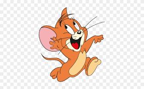
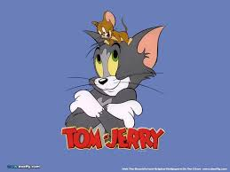

About Jerry
Jeremiah "Jerry" Mouse is a fictional character and one of the two titular main protagonists (the other being Tom Cat) in Metro-Goldwyn-Mayer's series of Tom and Jerry theatrical animated short films. Created by William Hanna and Joseph Barbera, Jerry is a brown mute anthropomorphic house mouse, who first appeared as a mouse named Jinx in the 1940 MGM animated short Puss Gets the Boot.The name "Jerry" was chosen by MGM animator John Carr, who submitted "Tom and Jerry" as potential names for the duo after an important Loews Inc. distributor in Texas asked for follow-ups to Puss Gets the Boot. While the idea of a cat-and-mouse duo was considered shopworn by the 1940s, Hanna and Barbera decided to expand upon the standard expected hunter/prey relationship. Their Jerry Mouse, an "incurable scene stealer", served more or less as the protagonist of most of the films; instead of being a "cowering victim" of his pursuer, Tom, he took delight in besting, and often torturing, his antagonist though sometimes, Tom is just following orders or is even just minding his own business and is antagonized by Jerry.Hanna and Barbera considered Tom and Jerry "the best of enemies", whose rivalry hid an unspoken amount of mutual respect. Jerry is also mute like Tom as well: Wikipedia.
What Makes Jerry Awesome!
- Jerry has had a number of voice actors over the years. Ever since his debut in Puss Gets the Boot his vocal effects were provided by co-creator William Hanna during the Hanna-Barbera era. Sara Berner also did vocal effects for Jerry in the short Baby Puss (1943) and voiced him in the short The Zoot Cat (1944), as well as Anchors Aweigh (1945) in a dance sequence with him and Gene Kelly.
- In later Tom and Jerry cartoons, Jerry acquired a young ward: a small grey mouse called "Tuffy" or "Nibbles" depending upon the cartoon, who was left on Jerry's doorstep as a foundling baby in the 1946 short The Milky Waif.
- Fourteen Tom and Jerry cartoons between 1940 and 1954 were nominated for the Academy Award for Best Short Subject: Cartoons, with seven of the shorts winning that award